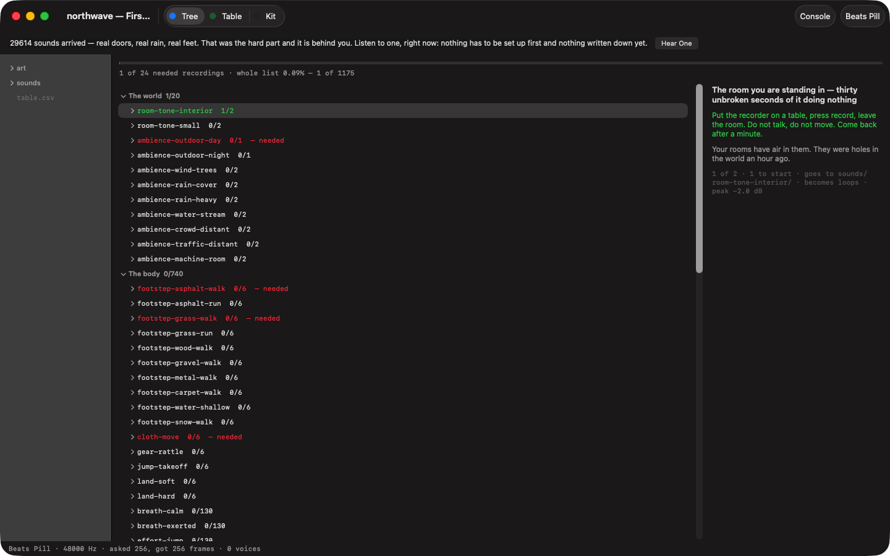
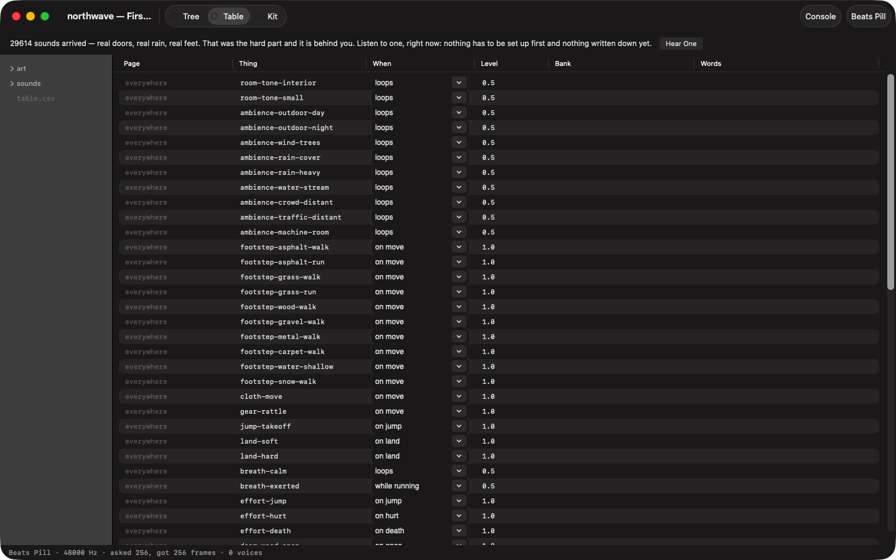
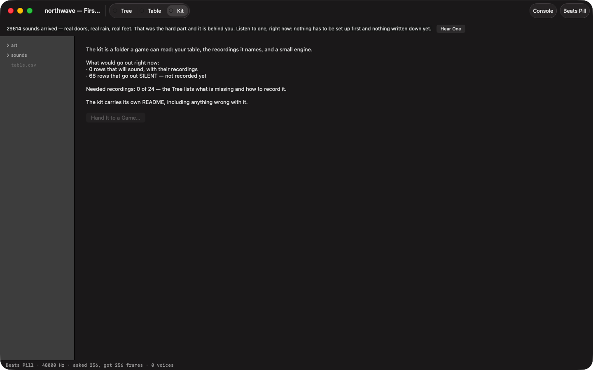
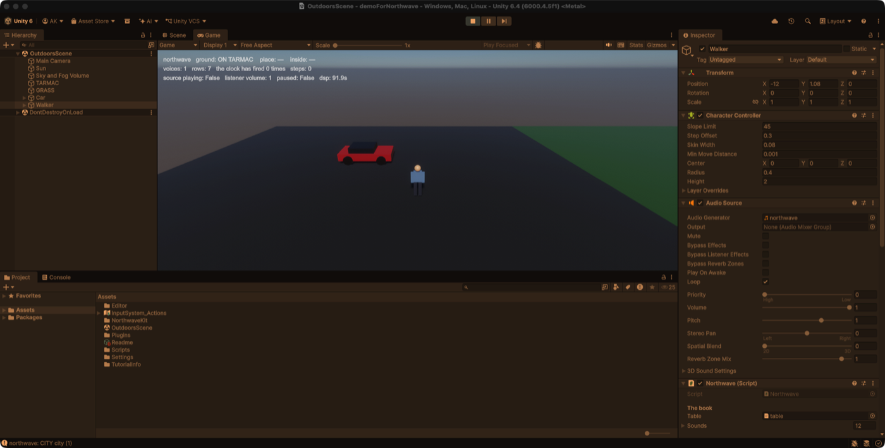

Northwavé is a sound development kit: it turns a game's sound design into a request list a person can answer with a microphone. This is the whole walk, exactly as the program teaches it.
⌘O or File ▸ Open Folder… — any folder on your disk. Northwavé makes no database and asks for no account: the project is the folder, and it stays yours. Drop your existing recordings anywhere inside; the explorer on the left shows the folder exactly as the Finder would — green means a recording is used by the book, grey means it is waiting.
Every sound the game needs is a named slot with a reason attached — what to record, how to record it, and why it matters. Pick a branch and read its card. Then either right-click a slot ▸ Record Now (the take is born where it will live, named for the slot that asked), or drag a file you already have onto it. Red is needed; green is delivered; the bar at the top only moves when a sound truly lands.

The whole design is one readable file — table.csv — six columns:
page, thing, when, level, bank, words. When is a menu, not an exam:
loops for beds, plays for acts, on for events,
follows for ladders, while, door, radio.
Beds sit at 0.5; acts speak at 1.0. A person can read it; so can an engine. Nothing locks.

Double-click a recording to hear it — through the same mixer the game will use, never
a second player, so what you audition is what will ship. The console
(top right) carries the transport: what is sounding, for how long, and a stop.
⌘. is Everything Off, always. WAV and Ogg Vorbis both open;
loop points travel in WAV's smpl chunk.
⌘E or File ▸ Hand It to a Game… — Northwavé writes a folder a game can read. The README that travels with it lists, honestly, everything that is still missing or wrong: a kit carries its own faults, so the programmer three weeks from now reads a sentence instead of debugging a mystery.

Drag the exported kit folder into Assets. That is the whole install:
the kit carries its own scripts, its own editor menu, and the native core. Then one
menu item — Northwave ▸ Set up the demo — builds a world around your table:
grounds, a walker, a car. Press Play. Footsteps come from your footstep bank;
the beds are your rooms; the curtain plays your films first.

The same kit binds to Unreal, Godot, Wwise and FMOD through the adapters folder —
and play.html plays it in a browser with nothing installed at all.